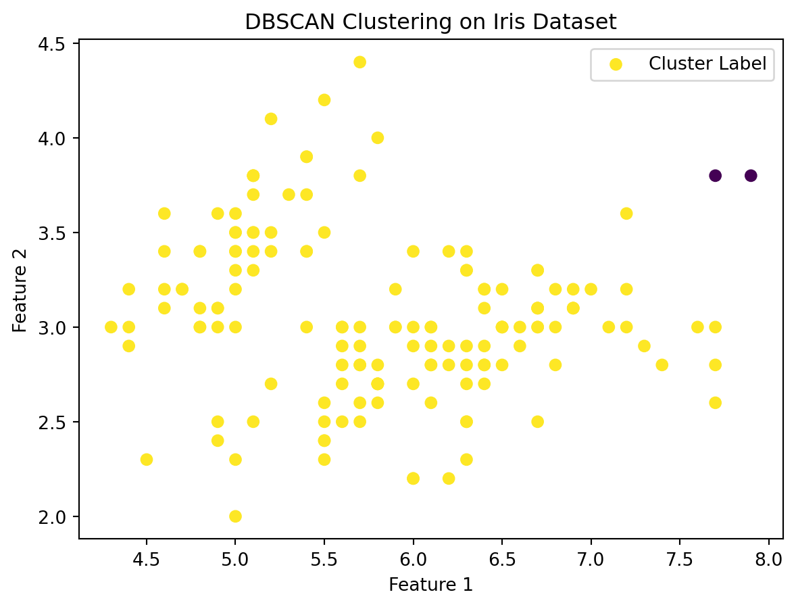

Machine Learning in Clustering: Understanding DBSCAN
Clustering is a significant machine learning task that involves grouping a set of objects in such a way that objects in the same group are more similar to each other than to those in other groups. One robust and widely-used method in clustering is DBSCAN (Density-Based Spatial Clustering of Applications with Noise). This blog post explores DBSCAN and demonstrates its application using a real-world dataset.
DBSCAN in Machine Learning
Handling Noise: One of the key strengths of DBSCAN is its ability to identify and deal with noise in the data. It can effectively separate outliers from core groups in the dataset.
No Need to Specify Number of Clusters: Unlike many clustering algorithms, DBSCAN doesn’t require you to specify the number of clusters beforehand. It determines the number of clusters based on the data.
Flexibility in Cluster Shapes: DBSCAN can find arbitrarily shaped clusters. It’s not limited to finding spherical clusters like k-means, making it more versatile for real-world data.
Example: DBSCAN Clustering on Public Dataset
For this example, we will use a publicly available dataset and apply the DBSCAN algorithm to identify clusters within it. We’ll visualize the results using a scatter plot, labeling the different clusters identified by DBSCAN.
Python Code for DBSCAN Clustering
Code
# Import necessary librariesimport matplotlib.pyplot as pltfrom sklearn.cluster import DBSCANfrom sklearn import datasets# Load a sample dataset (Iris dataset)iris = datasets.load_iris()X = iris.data[:, :2] # We only take the first two features for simplicity# Apply DBSCANdbscan = DBSCAN(eps=0.5, min_samples=5)clusters = dbscan.fit_predict(X)# Plottingplt.scatter(X[:, 0], X[:, 1], c=clusters, cmap='viridis', label='Cluster Label')plt.title('DBSCAN Clustering on Iris Dataset')plt.xlabel('Feature 1')plt.ylabel('Feature 2')plt.legend()plt.show()

In this example, we use the Iris dataset, a classic dataset in machine learning. We apply the DBSCAN algorithm from Scikit-learn, specifying an epsilon value for the neighborhood size and the minimum number of samples required to form a cluster. The result is visualized in a scatter plot, where each color represents a different cluster as identified by DBSCAN.
Understanding the Scatter Plot
The scatter plot demonstrates how DBSCAN clusters the data points. Each color in the plot represents a different cluster, while outliers (points not belonging to any cluster) can also be identified. This visualization provides a clear understanding of how DBSCAN segregates data into distinct groups and identifies noise, offering insights into the structure of the data.